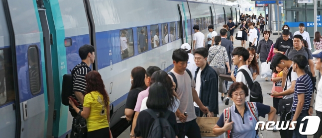

(서울=뉴스1) 김진 기자 = 추석① 연휴 기간 고속버스 운행이 일평균 1026회 늘어나고 철도와 항공 좌석이 일평균 2만석, 1만석씩 늘어난다. 2년 만에 명절 고속도로 통행료 면제가 재개되고, 서울 등 일부 지역에서는 버스·지하철 심야운행 시간을 연장한다.
국토교통부는 오는 8~12일을 '추석 연휴 특별교통대책기간'으로 정하고 코로나19 및 사고로부터 안전한 귀성·귀경길을 위해 관계기관 합동으로 정부합동 특별교통대책을 수립·시행한다고 7일 밝혔다.
김수상 국토부 교통물류실장은 "코로나19로부터 안전한 추석을 보내기 위해 대중교통 이용 시 마스크 착용 등 지난 8월 방역당국의 메시지를 꼭 준수해달라"며 "자가용 이동 시 출발 전 교통정보를 미리 확인해 혼잡시간대를 피해 출발하고, 안전운전에 만전을 기해달라"고 당부했다.
◇거리두기 해제 후 첫 명절…고속도로 휴게소 9곳에 PCR② 검사소 운영
이번 추석은 지난 4월 사회적 거리두기 해제 후 처음 맞는 명절로, 정부는 이동 시 방역과 안전관리에 중점을 두고 대책을 마련했다.
우선 자가용 이용 증가에 대비해 휴게소·졸음쉼터 내 임시 화장실을 687칸 확충하고 소독과 환기를 철저히 한다. 혼잡 완화를 지원할 인력도 약 1900명 추가 배치할 계획이다.
또 휴게소 혼잡안내시스템(20개소) 및 도로전광판(VMS)을 통해 혼잡정보를 사전 안내해 휴게소 이용 분산을 유도할 예정이다.
고속도로 주요 휴게소 9개소에는 PCR 검사를 받을 수 있는 임시선별검사소를 한시적으로 운영할 계획이다. 안성 경부선 서울방향, 이천 중부선 서울방향 등 경기 4개소, 섬진강 남해선 순천방향 등 전남 4개소, 통도사 경부선 부산방향 등 경남 1개소다.
이용객이 몰리는 철도역과 버스·연안여객선 터미널, 공항 등 모든 교통시설에 대해 수시 소독 및 환기, 비대면 예매 활성화 등 방역관리를 강화하고 전광판, 안내방송을 통해 마스크 착용 및 대화 자제 등 방역수칙을 집중 홍보해 국민 참여를 유도할 계획이다.
고속·시외버스, 철도, 연안여객선 등 교통수단도 운행 전후 소독을 철저히 하고, 운행 중 주기적으로 환기하도록 할 방침이다.
대중교통 이용객들은 반드시 마스크를 착용해야 하고 가급적 음식물 섭취를 자제하되, 불가피한 경우 간단한 식음료 위주로 짧게 섭취할 수 있다.
◇ 버스·철도·항공·여객선 수송력 확대…교통량 분산 조치도

뉴스1 ⓒ News1 윤일지 기자
버스, 철도, 항공기, 연안여객선도 증편된다. 고속버스의 경우 공동운수협정차량을 포함한 예비차량 342대를 투입해 운행횟수를 평시보다 일평균 1026회(4468회→5494회) 늘려 수송능력을 23% 확대한다. 시외버스는 예비차량 591대를 확보해 필요한 경우 즉시 투입할 예정이다.
철도는 운행횟수를 총 122회(4096회→4218회) 늘려 평소보다 일평균 2만석 늘어난 총 10만2000석이 추가 공급된다. 특히 KTX는 7만2000석, SRT는 1만8000석이 추가 공급된다.
항공은 국내선 운행횟수를 총 225편(3095편→3320편) 늘려 일평균 1만석이 늘어난 총 5만석을 추가 공급된다. 연안여객선은 운행횟수를 총 367회(3859회→4226회) 늘려 평시보다 15만명이 더 이용할 수 있도록 확대된다.
교통량 분산을 위한 관리 조치도 강화된다. 경부고속도로 남사진위IC와 국도 4개 구간(28.5㎞)이 신설·개통되고, 국도37호선 영동-보은 등 2개 구간(7.8㎞)이 임시 개통된다.
경부선 안성∼수원신갈 등 고속도로 110개 구간(1216㎞), 국도46호선 남양주∼가평 등 국도 15개 구간(172.7㎞)은 교통혼잡 예상구간으로 선정돼 관리된다. 평시 운영 중인 고속도로 갓길차로(47개 구간, 255.9㎞) 외에 추가로 승용차 전용 임시 갓길차로(27개 구간, 67.6㎞)도 운영될 예정이다.
교통량 분산을 유도하기 위해 첨단 정보통신기술(ITS)을 활용한 실시간 교통정보도 제공된다.
경부고속도로 한남대교 남단에서 신탄진 구간(141㎞)과 영동고속도로 신갈분기점에서 호법 구간(26.9㎞) 상·하행선에서는 8~12일 버스전용차로제를 당일 오전 7시부터 다음날 새벽 1시까지 평시보다 4시간 연장 운영한다.